0x37F8000~0x37FFFFF
(TWL/NITRO)
0x37F8000~0x37FFFFF
(TWL)
0x3040000~0x3047FFF
/WRAM-1

/ARM7
/DSP (data region) Shared
/ARM7
/DSP (code region) Shared
0x3000000~0x303FFFF
(TWL)
0x37C0000~0x37FFFFF
TWL includes the following WRAM regions. The background color of the cells within the table correspond to the colors of the regions in the figure immediately below.
| Platform | Master Processor | Capacity (KB) | Address | ARM9 | ARM7 | Name |
|---|---|---|---|---|---|---|
|
ARM7-Exclusive | 64 | 0x3800000 - 0x380FFFF | × | O | ARM7-Exclusive WRAM |
|
ARM9/ARM7 Shared *1 | 32 | (NITRO) 0x37F8000~0x37FFFFF (TWL/NITRO) 0x37F8000~0x37FFFFF (TWL) 0x3040000~0x3047FFF |
× | O | WRAM-0 /WRAM-1 |
|
ARM9 /ARM7 /DSP (data region) Shared |
256 | 0x3700000 - 0x373FFFF | O | O | WRAM-C |
|
ARM9 /ARM7 /DSP (code region) Shared |
256 | 0x3740000 - 0x377FFFF | O | O | WRAM-B |
|
ARM9/ARM7 Shared *1 | 256 | (TWL/NITRO) 0x3000000~0x303FFFF (TWL) 0x37C0000~0x37FFFFF |
× | O | WRAM-A |
*1 This region is assigned to the ARM7, so it cannot be changed to the ARM9 by the SDK, even though this is possible in terms of the hardware.
The three new 256-KB WRAM regions added to the TWL system are called WRAM-A, WRAM-B, and WRAM-C. The WRAM regions can be freely mapped within certain areas of the memory map to some extent, but with TWL-SDK, they are fixed to the positions in the table above and used that way.
WRAM-A has four 64-KB slots, and WRAM-B and WRAM-C have eight 32-KB slots. Different processors can be assigned for each, and it is possible to change whether each slot can be used. In terms of the original physical hardware design, the slot assignment addresses can be changed within a certain range, but with TWL-SDK, the addresses are fixed to the values shown below. However, for TWL-exclusive ROMs, it is possible to place a larger ARM7 component by using the image region of WRAM-B or WRAM-C (described below).
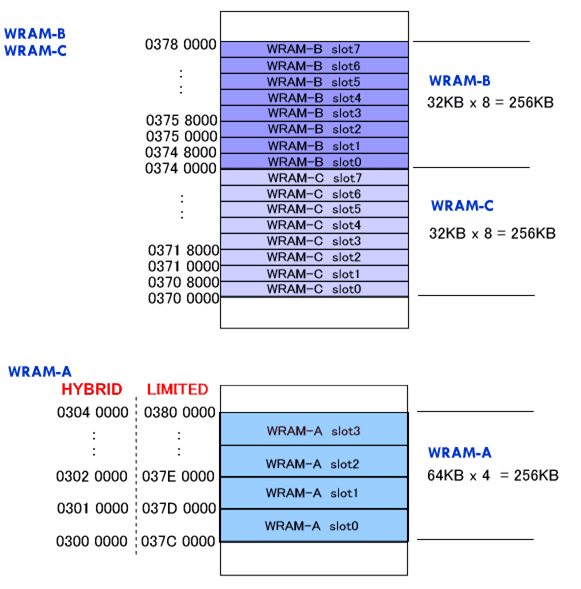
With TWL-exclusive ROMs, it is possible to place a larger ARM7 component by using the image region of WRAM-B. (WRAM-B and WRAM-C images also exist in TWL/NITRO hybrid ROMs, but these areas are inappropriate for the ARM7 components to be placed as described here.)
The WRAM-B image region appears in 0x03780000 - 0x037BFFFF, as shown in the figure below.
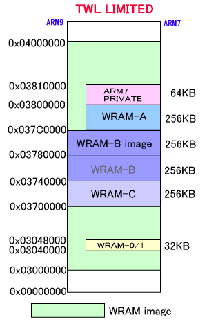
Normally, the ARM7 component program, system region, and stack region are placed in an combined area comprising WRAM-A (256 KB) and the ARM7-exclusive WRAM (64 KB), so the maximum total size was limited to 320 KB. However, considering that the WRAM-B image region is adjacent to WRAM-A, this combined area can be extended to a total of 586 KB if the WRAM-B image region (256 KB), WRAM-A (256 KB), and the ARM7-exclusive WRAM (64 KB) are used for this purpose. A caveat of this method is that the user will not be able to use WRAM-B.
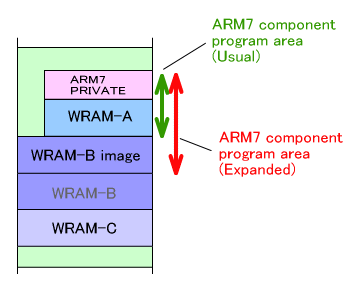
If it is critically important for the user to be able to use WRAM-B, special settings can be used to make the WRAM-C image contiguous with WRAM-A, which makes it possible to place a ARM7 component program that is larger than normal in the same manner. The user will not be able to use WRAM-C in this case.
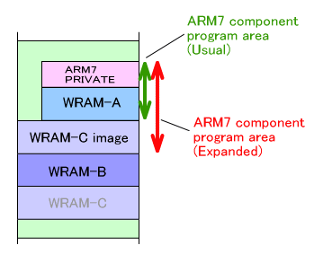
Refer to separate documentation for how to use either WRAM-B or WRAM-C to use the larger ARM7 component programs in this way. (*Not yet prepared)
TWL-SDK provides a WRAM manager in order for the ARM9, ARM7, and DSP to use WRAM-A/B/C efficiently. WRAM-A is used by the ARM7, however, so its assignment cannot be changed. Only WRAM-B and WRAM-C can be used by the ARM9 and DSP.If the WRAM-B or WRAM-C image is assigned to the ARM7 component program region, as well, the assignment of this part cannot be changed.
This WRAM manager is for use with WRAM-A/B/C, although there may be WRAM regions that the user cannot change, as described above. Accordingly, any references to "shared WRAM" within the following description of the WRAM manager refer only to these three 256-KB WRAM regions. Moreover, the notation "(WRAM-A/B/C)" will appear in the titles for these regions.
The role of the WRAM manager is to arbitrate requests from each processor to prevent the ARM9, ARM7, and DSP from using the shared WARM without permission. Specifically, the main work performed by the WRAM manager is shown below.
The WRAM manager is started by calling the MI_InitWramManager function. It must be started on both the ARM9 and the ARM7. You do not usually have to call this function because it is called by the OS_Init function.
Immediately after initialization, all WRAM regions will be reserved and allocated by the ARM9, ARM7, or DSP. This is to reflect the information in the registers that configure the WRAM. The hardware is designed so that in the register, each WRAM slot is always owned by something. As a result, it is not possible to determine when a given WRAM slot has not been allocated by anything (at least immediately after initialization), which explains why the system has been set up like this. Free the slots or cancel the reservations if necessary.
It is possible to specify a processor and reserve a shared WRAM slot using the WRAM manager. The reserved WRAM slot can only be allocated for the specified processor. The reservation is made based on the designated shared WRAM type and size.
When not specifying the location to reserve, reservations can be made using either the MI_ReserveWram or MI_ReserveWram_A, MI_ReserveWram_B, or MI_ReserveWram_C function. When specifying the slot to reserve, use the MI_ReserveWramSlot function or use the MI_ReserveWramSlot_A, MI_ReserveWramSlot_B, or MI_ReserveWramSlot_C function.
Regions that are already reserved for another processor or already in use cannot be reserved.
(Example)
Assume that WRAM-B and WRAM-C are not allocated at all, and are not reserved. Here, we'll reserve 128 KB for the ARM9, 64 KB for the DSP, and 32 KB for the ARM7, all from WRAM-B without specifying the location.
|
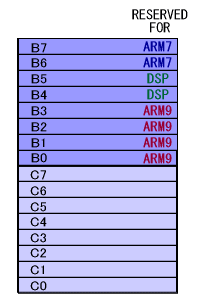
(Example)
Assume that WRAM-B and WRAM-C are not allocated at all, and are not reserved. Here, we'll reserve 128 KB from slot 4 for the ARM9, 64 KB from slot 0 for the DSP, and 32 KB from slot 2 for the ARM7.
|
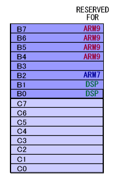
Reservations for shared WRAM slots can be cancelled. Even if the given slot is in use, all that's happening is that the internal reservation information is being overwritten, so the reservation is cancelled with no effect on the current content.
Use the MI_CancelWram function or use the MI_CancelWram_A, MI_CancelWram_B, or MI_CancelWram_C function to cancel reservations in the specified WRAM region for the specified processor. To specify the area, use the MI_CancelWramSlot function or use the MI_CancelWramSlot_A, MI_CancelWramSlot_B, or MI_CancelWramSlot_C function.
(Example)
Here, we'll cancel WRAM slots within WRAM-B that are reserved by the ARM9.
|
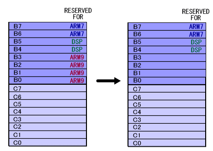
(Example)
Here, we'll cancel the reservation of a 128-KB WRAM slot reserved by the ARM9 that begins at slot 1 in WRAM-B.
|
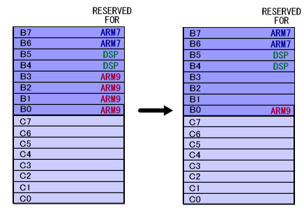
When you require a WRAM region, you can make an assignment request to the WRAM manager.
WRAM can be allocated in 64-KB chunks from WRAM-A and in 32-KB chunks from WRAM-B and WRAM-C. When the shared WRAM size is specified, the WRAM manager will attempt to allocate a contiguous region of WRAM of the designated size, starting with the lowest slot number for the specified WRAM.
Allocation will start with either unused and unreserved slots or slots that are reserved for the specified processor.
When not specifying a region, use the MI_AllocWram function or use the MI_AllocWram_A, MI_AllocWram_B, or MI_AllocWram_C function. To allocate by specifying a region, use the MI_AllocWramSlot function or use the MI_AllocWramSlot_A, MI_AllocWramSlot_B, or MI_AllocWramSlot_C function.
Example:
Here, we will allocate 96 KB from WRAM-B for the ARM9.
|
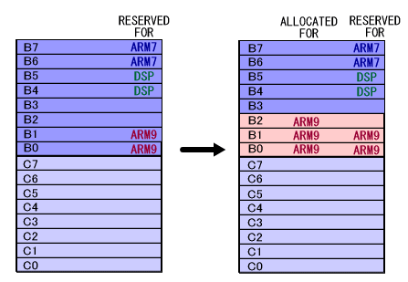
Example:
Here, we will allocate 64 KB from WRAM-B for the ARM9, starting with slot 2.
|
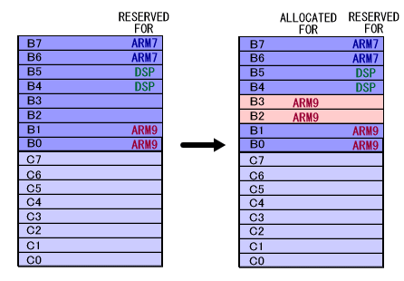
Example:
Here, we will allocate 96 KB from WRAM-B for the ARM9, starting with slot 2.
|
In the case illustrated by the figure below, 96 KB starting from slot 2 in WRAM-B cannot be allocated for the ARM9. This is because slot 4 is reserved for the DSP.
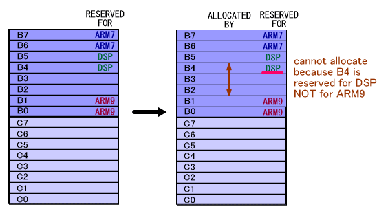
Shared WRAM allocated by the WRAM manager can be deallocated. However, even if a given WRAM is deallocated, the reservation information for that WRAM will not be cancelled.
Use the MI_FreeWram function or use the MI_FreeWram_A, MI_FreeWram_B, or MI_FreeWram_C function to deallocate regions within the specified WRAM that are assigned to the specified processor. To allocate by specifying a region, use the MI_FreeWramSlot function or use the MI_FreeWramSlot_A, MI_FreeWramSlot_B, or MI_FreeWramSlot_C function.
(Example)
Here, we'll free a WRAM region in WRAM-B that has been allocated for the ARM9.
|
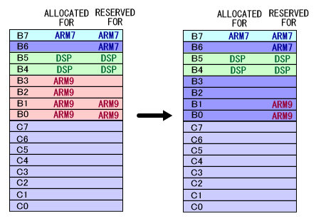
(Example)
Here, we'll free a 128-KB region that was allocated for the ARM9. The region being freed begins at slot 1 in WRAM-B.
|
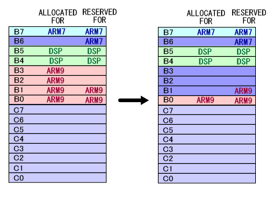
Allocated WRAM slots can be changed from their current configuration for a separate processor.
The functions to do this are MI_SwitchWram or MI_SwitchWram_A, MI_SwitchWram_B, and MI_SwitchWram_C. To switch by specifying a slot, use the MI_SwitchWramSlot function or use the MI_SwitchWramSlot_A, MI_SwitchWramSlot_B, or MI_SwitchWramSlot_C function.
(Example) Here, we take a region in WRAM-B that is allocated to the ARM9 and switch it to the DSP.
|
In the figure below, slot 0 and slot 1 are reserved for the ARM9. The reserved processor will not change, even if the allocated processor changes. (Reservations are only used to make decisions when allocating a given region.)
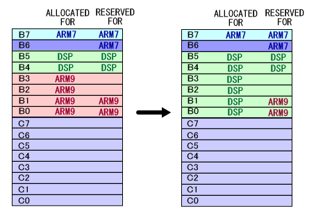
(Example)
Here, we take a region in WRAM-B that is allocated to the ARM9 and switch it to the DSP. The region being reallocated is 128 KB and begins at slot 2.
|
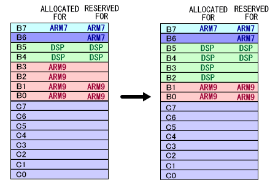
The following functions have been created to get the current settings of the shared WRAM. These functions get the status by reading the values of the I/O register.MI_GetWramBankMaster gets the master processor for the specified WRAM slot.MI_GetWramBankEnable gets a value indicating whether the specified WRAM slot is accessible.
MI_GetWramBankOffset gets the offset for the specified WRAM slot.
MI_GetWramMapStart gets the start of the mapped addresses for the specified WRAM.
MI_GetWramMapEnd gets the end of the mapped addresses for the specified WRAM.
MI_GetWramMapImage gets the image occurrence settings for the specified WRAM region.
MI_IsWramSlotLocked gets a value indicating whether the specified WRAM slot has been locked.
The following functions have been provided to get management information maintained by the WRAM manager.
MI_IsWramSlotUsed gets a value indicating whether the specified WRAM slot has already been allocated.
MI_GetWramReservation gets the processor to which the specified WRAM slot has been allocated.
MI_GetAllocatableWramSlot gets combined information for the WRAM slots that can be allocated with the specified processor.
MI_GetFreeWramSlot gets combined information for free WRAM slots that have not been reserved or allocated.
MI_GetUsedWramSlot gets combined information for WRAM slots that have been allocated from some processor.
The MI_DumpWramList and MI_DumpWramListAll debug functions have been created to determine the current assignments. These functions will not do anything in FINALROM builds.
MI Function List (Work RAM Settings)
2008/03/03 Removed descriptions of WRAM locking functions.
2008/01/23 Revised WRAM mapping diagrams.
2007/08/09 Initial version.
CONFIDENTIAL